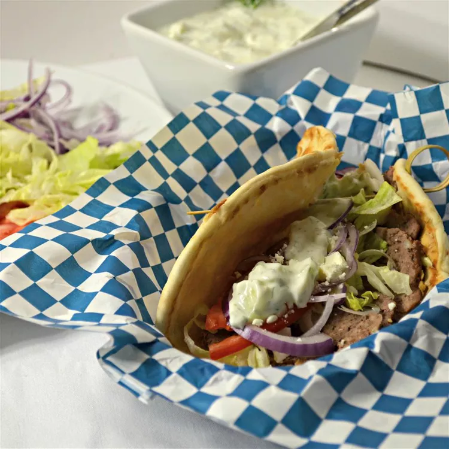

Gyro

Description
Gyros are meat cooked on a vertical rotisserie, then sliced and served wrapped or stuffed in pita bread, along with
other ingredients such as tomato, onion, fried potatoes, and tzatziki
Ingredients
- 1 small onion, cut into chunks
- 1 pound ground lamb
- 1 pound ground beef
- 1 tablespoon minced garlic
- 1 teaspoon dried oregano
- 1 teaspoon ground cumin
- 1 teaspoon dried marjoram
- 1 teaspoon dried thyme
- 1 teaspoon dried rosemary
- 1 teaspoon freshly ground black pepper
- ¼ teaspoon sea salt
- 12 tablespoons hummus
- 12 pita bread rounds
- 1 small head lettuce, shredded
- 1 large tomato, sliced
- 1 large red onion, sliced
- 6 ounces crumbled feta cheese
- 24 tablespoons tzatziki sauce
Steps
Text from wikipedia and allrecipes.com